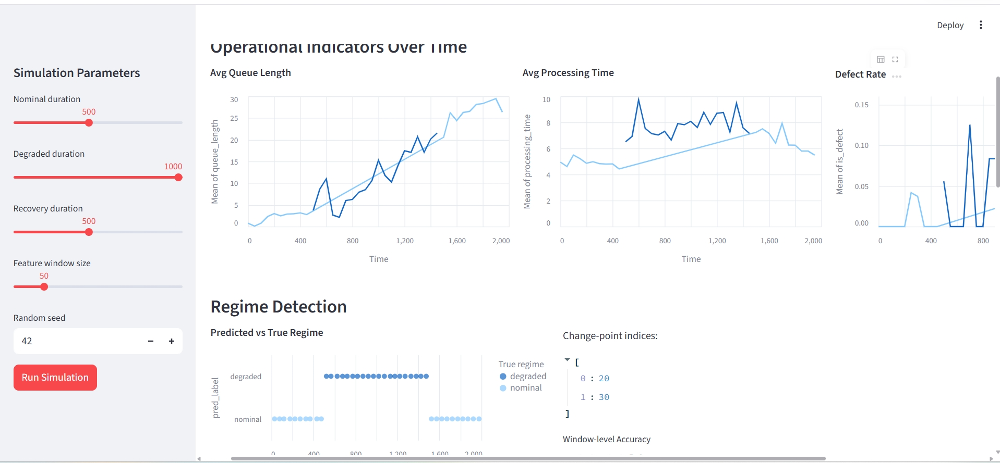
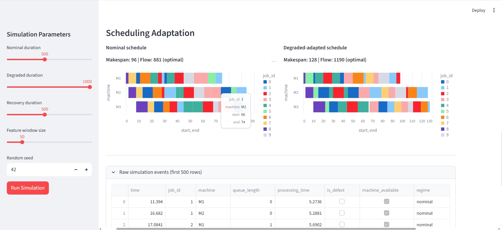
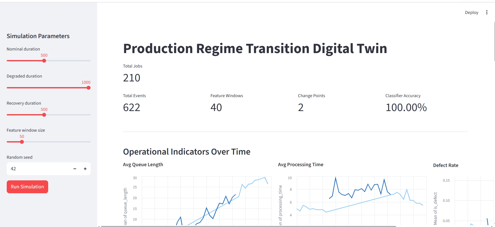

PRODUCTION PLANNING PROTOTYPE
Production Regime
Transition Digital Twin
SimPy · ruptures · scikit‑learn · OR‑Tools · Streamlit
4 Connected Ideas
01
Simulation
SimPy discrete-event engine. 3 machines in series with stochastic failures and defects.
02
Detection
ruptures.Pelt finds regime change-points. RandomForest classifies operational windows.
03
Scheduling
OR‑Tools CP‑SAT job‑shop solver. Priorities adapt to the estimated system state.
04
Traceability
MLflow tracks every run. Streamlit dashboard visualises the full pipeline.
Production Line Simulation

JOB FLOW
M1
→
M2
→
M3
200+
Jobs
500+
Events
83%
Accuracy
Nominal → Degraded → Recovery
Detection & Scheduling Adaptation
REGIME DETECTION
ruptures.Pelt
locates change‑points in operational signals.
RandomForest
classifies windows as nominal or degraded — 83 %+ accuracy.
SCHEDULING
OR‑Tools CP‑SAT
job‑shop solver. Processing times scale up in degraded mode.

Nominal makespan
64
Degraded makespan
84

Interactive Dashboard
Streamlit · Altair · MLflow
github.com/jeaneigsi/digital‑twin
Production planning under uncertainty